Рок-музыка (англ. Rock music) — обобщающее название ряда направлений популярной музыки. Слово rock (в переводе с английского «качать», «укачивать», «качаться») в данном случае указывает на характерные для этих направлений ритмические ощущения, связанные с определённой формой движения, по аналогии с roll, twist, swing, shake... Такие признаки рок-музыки, как использование электромузыкальных инструментов, творческая самодостаточность (для рок-музыкантов характерно исполнение композиций собственного сочинения), являются вторичными и часто вводят в заблуждение. По этой причине принадлежность некоторых стилей музыки к року оспаривается.
Такие субкультуры, как моды, хиппи, панки, металлисты, готы, эмо, индирокеры, СКА неразрывно связаны с определёнными жанрами рок-музыки.
Рок-музыка имеет большое количество направлений: от достаточно «лёгких» жанров, таких как танцевальный рок-н-ролл, поп-рок, брит-поп, до брутальных и агрессивных жанров — дэт-метала и грайндкора. Содержание песен варьируется от лёгкого и непринуждённого до мрачного, глубокого и философского. Часто рок-музыка противопоставляется поп-музыке и т. н. «попсе». Несколько более определённо можно сказать о так называемой «музыкальной экспрессии», которая, в силу повышенной, в сравнении с иными жанрами музыки, динамики (громкости) исполнения (по разным источникам от 110 до 155 дБ), является особой для многих рок-стилей (направлений), поскольку даже звучание большого симфонического оркестра находится в пределах 85 дБ и редко доходит до 115 дБ. («Конкуренцию» в плане громкости могут составить лишь направления музыки, использующие электроакустическое звучание).
Русский рок — рок-музыка с текстами на русском языке и/или созданная музыкантами из России. Русский рок зародился в СССР во второй половине XX века под влиянием мировой, прежде всего западно-европейской и американской рок-музыки.
Особенности:
Хотя в русском роке существуют все те же жанры и стили, что и в мировом, у него есть и свои национальные особенности, связанные с использованием русского мелоса. Кроме того, русский рок делает акцент на поэзию и подачу текста. Иногда «русский рок» рассматривают как отдельный жанр в музыке или в поэзии.
Русский рок за пределами России:
Иногда к русскому року относят себя некоторые русскоязычные группы за пределами России, а также различные группы в странах бывшего СССР, на которые оказал влияние русский рок. Например, такие рок-группы, как «Адаптация», которые, несмотря на нахождение в Казахстане (Алма-Ата и Актюбинск), имеют полное право называться русским роком. То же касается белорусской группы «Красные Звёзды», стилистически сближающейся с сибирской волной русского рока. Известная российская группа Peter Pan the Band стала более широко известна за рубежом. Её дебютный альбом «Послушай и застрелись!» стал саундтреком к скандальной игре Postal 3.
В 2013 году российская группа Louna выпустила дебютный англоязычный альбом «Behind a Mask», а также несколько англоязычных клипов, во главе которых стоит клип «Business». Группа попадает в ротации нескольких американских радиостанций.
Рок-группы Украины:
На Украине рок развивался со времён СССР. Русский рок представлен в творчестве музыкантов Украины достаточно ярко. В частности, это группы "5'NIZZA", «K.P.S.S.», «Труба», «Мы100», «ТОЛ», «Хламида», «Двойной Смысл», «Сердце СолнцА», «Rana Ridibunda», «MARVEL», «Дороги меняют цвет», «777». С русскоязычных песен начинала свой путь группа «Кому вниз» (альбом «Падая вверх»), отдельные русскоязычные песни есть у группы «Вопли Видоплясова».
«Агата Кристи» — советская и российская рок-группа, одна из наиболее популярных в стране в середине и во второй половине 1990-х годов. Основана в 1985 году в Свердловске Вадимом Самойловым, Александром Козловым и Петром Маем под названием ВИА «РТФ УПИ», официально же история группы отсчитывается с концерта 20 февраля 1988 года. Во время записи альбома «Второй фронт» в начале того же года к группе примкнул младший брат Вадима Глеб. Впоследствии состав группы неоднократно менялся, но её лидерами и вокалистами неизменно оставались братья Самойловы. Они же, вместе с Александром Козловым, являются авторами всех песен «Агаты Кристи».
Творчество группы неоднородно и пересекается со многими направлениями рок-музыки — готик-рок, постпанк, альтернативный рок, психоделический рок, глэм-рок, арт-рок, хард-рок и другие.
К наиболее известным песням группы можно отнести такие композиции, как «Viva Kalman!», «Как на войне», «Истерика», «Опиум для никого», «Сказочная тайга», «Чёрная луна», «Моряк», «Ковёр-вертолёт» и «Секрет».
На счету у группы десять студийных альбомов, пять сборников, два альбома с ремиксами, три макси-сингла, восемнадцать видеоклипов. В 2009 году музыканты объявили о прекращении существования коллектива и отправились в заключительное турне по России и ближнему зарубежью. К лету 2010 года был записан последний альбом группы — «Эпилог», а также поставлена точка в одноимённом туре — группа отыграла прощальный концерт на фестивале «Нашествие».
После распада «Агаты Кристи» Глеб Самойлов совместно с клавишником Константином Бекревым и ударником Дмитрием Хакимовым, игравшими в «Агате» с 2008 года, создал группу «Глеб Самойлоff & The Matrixx» (впоследствии просто The Matrixx).
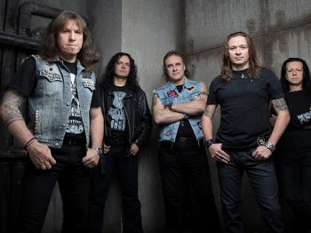
«Ария» — советская и российская хеви-метал-группа. Одна из самых успешных российских рок-групп, при этом — это одна из немногих российских метал-групп, достигших серьёзного коммерческого и творческого успехов и популярности за пределами поклонников хэви-метала. Лауреат премии Fuzz 2007 года как лучшая live-группа. Её бывшими участниками были образованы многие другие известные группы («Мастер», «Кипелов», «Маврин», «Артерия», «Артур Беркут»), которые вместе составляют плеяду, называемую «Семейкой Арии».
Бóльшая часть текстов группы написана Маргаритой Пушкиной, а музыки — Виталием Дубининым и основателем группы Владимиром Холстининым.
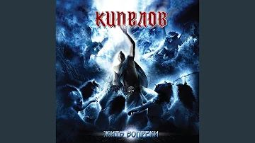
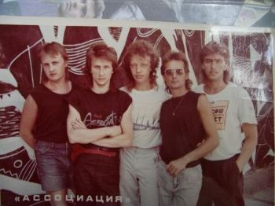
Ассоциация содействия возвращению заблудшей молодёжи на стезю добродетели (кратко Ассоциация) — советская рок-группа, созданная в 1986 году в Свердловске Алексеем Могилевским и Николаем Петровым. «Ассоциация» записала шесть альбомов и прекратила своё существование в середине 90-х. Коллектив был возрожден в 2014-м году.
Название позаимствовано у Герберта Уэллса, книга Каникулы Мистера Ледбеттера (англ. Mr. Ledbetter's Vacation).
Состав Группы:
• Алексей Могилевский — вокал, клавишные, саксофон, аккордеон, гитара
• Валерий Кузин — гитара, бэк-вокал
• Евгений Звидённый — бас-гитара
Дискография:
• 1986 — «Угол»
• 1987 — «Команда 33» (песни из одноимённого фильма)
• 1988 — «Калейдоскопия»
• 1989 — «Клетка для маленьких»
• 1990 — «Сторона»
• 1991 — «Щелкунчик»
• 1996 — «Greatest Hits» (сборник)
«Чиж & Со» (Чиж и Ко) — российская рок-группа, созданная в начале 1990-х годов гитаристом, вокалистом и автором песен Сергеем Чиграковым по прозвищу «Чиж». Последний студийный альбом группы вышел в 1999 году.
Состав:
• Сергей «Чиж» Чиграков — вокал, гитары, клавишные, губная гармоника и другие инструменты, автор музыки и текстов (1994—наши дни)
• Михаил Владимиров — гитара (1994—наши дни)
• Алексей Романюк — бас-гитара (1994—наши дни)
• Евгений Баринов — клавишные, аккордеон, конги, шейкер, бубны (1996—наши дни)
• Владимир Назимов — ударные (2014—наши дни)
Дискография, Студийные альбомы:
• 1994 - Перекрёсток
• 1995 - О любви
• 1996 - Эрогенная зона
• 1996 - Полонез
• 1997 - Бомбардировщики
• 1999 - Нечего терять
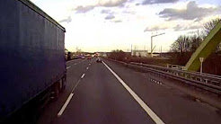
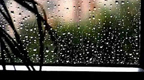
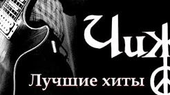
«Комиссар» — российская музыкальная группа.
Дискография, Альбомы:
• 1991 — Наше время пришло
• 1998 — Дрянь
• 2000 — Музыка нового тысячелетия
• 2002 — Любовь — это яд
• 2013 — Короли
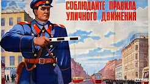
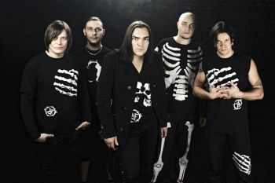
«Кукрыниксы» — российская рок-группа, основанная Алексеем Горшенёвым («Ягодой»), младшим братом Михаила Горшенёва («Горшка»), лидера группы «Король и Шут».
Название группы происходит от трио советских карикатуристов Кукрыниксы.
Музыкальный стиль группы, в целом укладывающийся в рок, со временем менялся. В первых альбомах группа играла панк-рок, в более поздних — отошла от панка, демонстрируя некоторое влияние постпанка.
«Ленинград» (полное название — «Группировка Ленинград») — российская музыкальная группа из Санкт-Петербурга, созданная Сергеем Шнуровым. Известна, в частности, эксцентричными песнями с большим количеством мата и алкогольно-бытовой тематикой. Группа использует в своём творчестве обширный состав духовых инструментов: труба, саксофон, тромбон, туба. Также группа иногда расширяется за счёт саксгорнов.
25 декабря 2008 было объявлено о распаде группы. 9 августа 2010 года, с объявления двух ноябрьских концертов в Москве, началось возрождение группы.
Текущий Состав:
• Сергей Шнуров, Шнур — вокал, музыка, тексты, гитара, перкуссия, бас-гитара, контрабас (1997—2008, 2010—наши дни)
• Андрей Антоненко, Андромедыч (другой псевдоним Антоненыч) — туба, клавишные, аккордеон, вокал, баритон-горн (1997—2008, 2010—наши дни)
• Алексей Калинин, Микшер — перкуссия (конги, бонги, тимбалес, тарелки и т. д.), барабаны (1997—2002, 2006—2008, 2010—наши дни)
• Александр Попов, Пузо — большой барабан, вокал, гитара, бас-гитара (1997—2008, 2010—наши дни)
• Всеволод Антонов, Севыч (ранее псевдоним был Козацька Рада) — бэк-вокал, шоумен, перкуссия (маракасы, тамбурин, гуиро), гитара, бас-гитара, губная гармоника (2000—2008, 2010—наши дни)
• Григорий Зонтов, Зонтик, Mr. Umbrella — тенор-саксофон (2002—2008, 2010—наши дни)
• Роман Парыгин, Ромыч, RGP, Шухер — труба, гитара, вокал, скретчи (2002—2008, 2010—наши дни)
• Андрей Кураев, Дед, Grandpa — бас-гитара, перкуссия, контрабас (2002—2008, 2010—наши дни)
• Илья Рогачевский, Пианист — клавиши, аккордеон (2002—2008, 2010—наши дни)
• Константин Лимонов, Лимон — гитара, перкуссия (2002—2008, 2010—наши дни)
• Владислав Александров, Валдос, Валдик, Водяной — тромбон (2002—2008, 2010—наши дни)
• Алексей Канев, Лёха — баритон-саксофон, бубен, альт-саксофон (2002—2008, 2010—наши дни)
• Денис Можин, Дэнс — звукорежиссёр (2002—2008), барабаны (2010—наши дни)
• Дмитрий Гугучкин, Дима Гугучкин — гитара (2010—наши дни)
• Флорида Чантурия — вокал, бэк-вокал (2016—наши дни)
• Виктор Рапотихин — скрипка (2016—наши дни)
Дискография, Студийные Альбомы:
• 1999 — Пуля
&bubull; 1999 — Мат без электричества
• 2000 — Дачники
• 2001 — Маде ин жопа
• 2001 — Пуля +
• 2002 — Пираты XXI века
• 2002 — Точка
• 2003 — Для миллионов
• 2004 — Бабаробот
• 2005 — Huinya (совместно с The Tiger Lillies)
• 2005 — Хлеб
• 2006 — Бабье лето
• 2007 — Аврора
• 2011 — Хна
• 2011 — Вечный огонь
• 2012 — Рыба
• 2012 — Вечерний Ленинград
• 2014 — Фарш/Пляж наш
Использование музыки в кино:
• «Деньги» — песня «Money»
• «Агентство НЛС» — песня «Зуб золотой» и главная музыкальная тема, в 14 серии 1 сезона звучит музыка из песни «WWW»
• «Игры мотыльков» — песня «Злая пуля»
• «Бумер» — песня «Жопа»
• «Антибумер» — песня «Менеджер»
• «Он ругается матом» — режиссёр (Тофик Шахвердиев)
• «День выборов» — панк-группа «Ненормалы» (песня принадлежит Алексею Кортневу из «Несчастного случая»)
• «О, счастливчик» — песня «Менеджер»
• «Ленинград: Мужчина, который поет» — режиссёр (Питер Риппл)
• «Гитлер капут!» — песня «Менеджер»
• «Реальные пацаны. Московский сезон. Часть 1» — серия 94, песня «Рыба»
• «Реальные пацаны. Московский сезон. Часть 2» — серия 121, песня «Мамба»
• саундтрек к фильму «Бумер» (2003)
• саундтрек к фильму «Бумер 2» (2007)
• «Сладкая жизнь» — серия 4, песня «Рыба»
• «Город соблазнов» (телесериал) — песни «Мне бы в небо», «Терминатор», «Злая пуля»
• Саундтрек к фильму «Теория запоя» (2003)
• «Кризис нежного возраста» (6-я серия) — песня «Терминатор»
• «14+. История первой любви» — песня «И так далее»
• «Ёлки 5» — песня «Начинаем отмечать»
• «И всё осветилось» — песня «Звезда рок-н-ролла»
• «Реальные упыри» — песня «Ласточка»
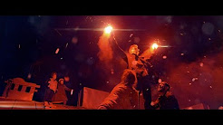
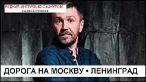
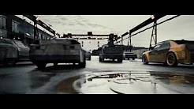
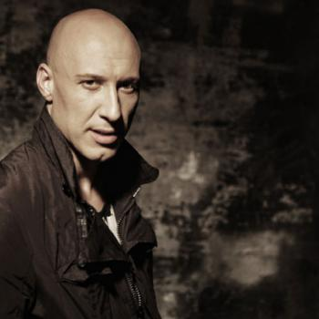
Денис Васильевич Майданов (род. 17 февраля 1976, Балаково, Саратовская область, РСФСР, СССР) — российский политический и общественный деятель, певец, автор-исполнитель песен, композитор, поэт, актёр, музыкальный продюсер. Депутат Государственной Думы Федерального собрания Российской Федерации VIII созыва от Одинцовского одномандатного избирательного округа № 122, первый заместитель председателя комитета Государственной Думы по культуре с 12 октября 2021 года. Член фракции «Единая Россия».
Заслуженный артист Российской Федерации (2017). Лауреат премии ФСБ России (2015) и премии Министерства обороны Российской Федерации в области культуры и искусства (2017).
Член Центрального штаба Общероссийского народного фронта. Заместитель председателя Общественного совета при Министерстве культуры Российской Федерации.
Многократный обладатель музыкальных премий «Золотой граммофон», «Песня года», «Шансон года», а также ряда других наград.
Известные официальные данные:
• Творческий псевдоним: Алексей Матов;
• Дата рождения: 1973-й год, 3 ноября;
• Знак зодиака: Скорпион;
• Род деятельности: певец, клипмейкер, автор музыки и текстов.
Биография и творчество:
Сам бард не любит откровенничать про начало жизни, говоря: «Будет ли отрада читающему, если расскажу про обычное детство?» Кстати, Матов – это не настоящая фамилия певца, а псевдоним, присоединенный к имени. Классно сказал про неопределенность в знаниях о кумире один из поклонников Алексея, Сергей Аникеев: «Ну, распишет биографию – и все! Пропадет интрига, не будет гибкости для фантазии». И его же слова: «Распространять биографию Матова, на мой взгляд, вредно. Главное – аморального он ничего не делал».
Но сквозь строчки в соц. сетях можно кое-что просмотреть о том, как жил подросток, потом юноша, и уже взрослый мужчина. Взял гитару в руки, потому что популярное хобби: играть на гитаре – не обошло и его. «Подобрал несколько песен и понял: надо писать и петь свое, а не чье-то. Сначала выходило не слишком гладко, потом – лучше, но песни начали рождаться целыми блоками», – со слов Матова из интервью на встрече игроков «WOW» в Голицыно. Первое произведение родилось, по словам автора, когда ему было 13 лет.
Начало 2010-х – расцвет творчества Алексея Матова. Регулярные релизы песен и альбомов, выступления перед живой публикой создали ему славу искреннего, эмоционального исполнителя собственных талантливых произведений. Большинство синглов посвящено военной тематике, например:
• «Полверсты смерти и огня», почти 2 млн просмотров на youtube;
• «На последнем рубеже»; около 3 млн просмотров на ютубе;
• «Аврора».
Есть у него и лирические синглы, например – «Много ли котенку надо». По стилю иногда Алексея Матова сравнивали с Виктором Цоем, но поклонники певца не соглашались: «Это эпоха похожа: перестроечная лихая молодость, полунищее начало жизни – а песни разные!» В 2016-м году бурно развивавшуюся карьеру барда прервала болезнь – Алексей пережил тяжелый инсульт. После болезни государство назначило певцу пенсию: ее Сергею Матову хватает на питание, на оплату коммунальных услуг. В 2020-м году, пока не появляясь на публике, Алексей уже активно занимается творчеством, занимаясь ремастерингом старых песен, выпуская новые альбомы.
«Мумий Тролль» (до 1989 года — Муми Тролль) — советская и российская рок-группа из Владивостока. Основана в 1983 году во Владивостоке её бессменным лидером и идеологом Ильёй Лагутенко. Группа представляла Россию на конкурсе песни «Евровидение» 2001, где заняла 12-е место.
• Новая луна апреля (1985)
• Делай Ю Ю (1990)
• Морская (1997)
• Икра (1997)
• Шамора (1998)
• Точно ртуть алоэ (2000)
• Меамуры (2002)
• Похитители Книг (2004)
• Слияние и Поглощение (2005)
• Амба (2007)
• 8 (2008)
• Редкие земли (2010)
• Vladivostok (2012)
• SOS матросу (2013)
• Пиратские копии (2015)
• Malibu Alibi (2016)
Текущий состав:
• Илья Лагутенко — вокал, клавишные, ритм-гитара, автор песен, концепция, бубен, акустическая гитара (c 1983 года)
• Олег Пунгин — ударные, электронная перкуссия (c 1997 года)
• Александр Холенко (DZA) — программирование, семплы, синтезатор, аранжировки (с 2013 года)
• Артём Крицин — соло-гитара, бэк-вокал (с 2013 года)
• Павел Вовк — бас-гитара (с 2016 года)
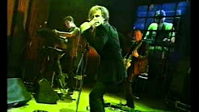
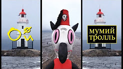
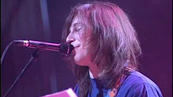
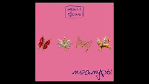
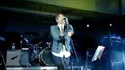
«Нэнси» — российская и украинская музыкальная поп-рок группа, наиболее известная благодаря песне «Дым сигарет с ментолом».
Создана в 1992 году автором-исполнителем Анатолием Бондаренко в городе Константиновка Донецкой области.
Состав группы:
• Анатолий Михайлович Бондаренко — родился 11.01.1966 г. Место рождения — г. Константиновка Донецкой области, УССР, СССР.
• Андрей Александрович Костенко — родился 15.03.1971 г. Место рождения — о. Итуруп Южно-Курильский округ (Сахалинская область РСФСР) (СССР). С 1974 (3 года) жил в г. Краматорск Донецкой области.
Василий Владимирович Гончаров (род. 21 марта 1984, Ростов-на-Дону, СССР) — российский музыкант, вокалист, поэт, композитор и музыкальный продюсер. Основатель и лидер группы «Чебоза». Более известен как Вася Обломов в связи с созданием одноимённого музыкального проекта. Один из основателей и участник музыкально-поэтического проекта «Господин хороший». Общественный деятель.
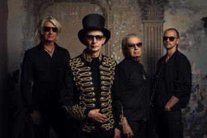
«Пикник» — советская и российская рок-группа, основанная в Ленинграде в 1978 году. Отправной точкой нынешнего «Пикника» сами участники группы считают приход в группу Эдмунда Шклярского в 1981 году, либо год записи первого альбома — 1982 год.
Музыка группы, имеющая свои корни в русском роке, прогрессировала в оригинальный, необычный стиль с использованием симфонических, клавишных и экзотических народных инструментов.
«СерьГа» — российская рок-группа, образованная в 1994 году Сергеем Галаниным. Девиз группы — «Для тех, у кого есть уши».
• Сергей Галанин — вокал, акустическая гитара, электрогитара, электроакустическая гавайская гитара.
• Андрей Кифияк — соло-гитара
• Сергей Левитин — ритм-гитара
• Сергей «Sungy» Поляков — барабаны.
• Сергей Крынский — бас-гитара, бэк-вокал
• Собачий вальс, 1994
• СерьГа, 1995
• Долина глаз, 1997
• Дорога в ночь, 1997
• Живая коллекция, 1998
• Страна чудес, 1999
• Лучшие песни, 2001
• Я такой, как все, 2003
• Ночная дорога в страну чудес, 2005
• Нормальный человек, 2006
• Детское сердце, 2011
• Природа, свобода и любовь, 2011
• Чистота, 2015
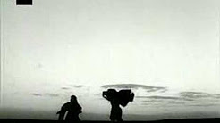
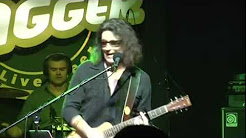
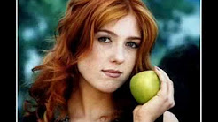
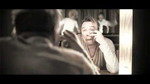
«Сплин» — российская рок-группа из Санкт-Петербурга. Бессменный лидер — Александр Васильев. Датой рождения группы считается 27 мая 1994 года.
Название группы возникло под влиянием строк стихотворения российского поэта Серебряного века Саши Чёрного, на основе которого была создана песня «Под сурдинку» из первого альбома группы («Пыльная быль»):
Как молью изъеден я сплином…
Посыпьте меня нафталином,
Сложите в сундук и поставьте меня на чердак,
Пока не наступит весна.
• Александр Васильев — вокал, ритм-гитара, гитара (1994—наши дни)
• Николай Ростовский — клавишные (1994—1998, 2001—наши дни)
• Вадим Сергеев — соло-гитара (2001—2002, 2007—наши дни); бас-гитара (2002—2007)
• Алексей Мещеряков — ударные (2005—наши дни)
• Дмитрий Кунин — бас-гитара (2007—наши дни)
Бывшие участники:
• Александр Морозов — бас-гитара (1994—2000)
• Стас Березовский — соло-гитара (1994—2006)
• Николай Лысов — ударные (1994—1998)
• Ян Николенко — флейта, перкуссия (1998—2006)
• Сергей Наветный — ударные (1998—2005)
• Николай Воронов — бас-гитара (2000—2002)
Дискография, Номерные альбомы:
• 1994 — «Пыльная быль»
• 1996 — «Коллекционер оружия»
• 1997 — «Фонарь под глазом»
• 1998 — «Гранатовый альбом»
• 1999 — «Альтависта»
• 2001 — «25-й кадр»
• 2003 — «Новые люди»
• 2004 — «Реверсивная хроника событий»
• 2007 — «Раздвоение личности»
• 2009 — «Сигнал из космоса»
• 2012 — «Обман зрения»
• 2014 — «Резонанс. Часть 1»
• 2014 — «Резонанс. Часть 2»
• 2016 — TBA (точная дата не названа)
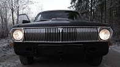
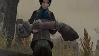
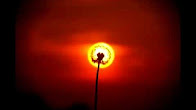
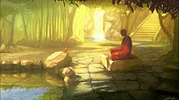
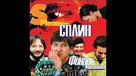
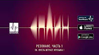
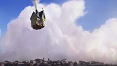
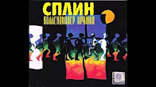
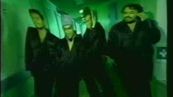
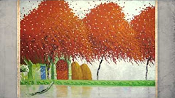
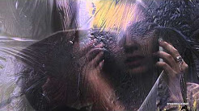
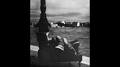
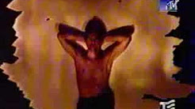
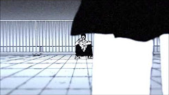
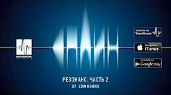
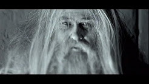
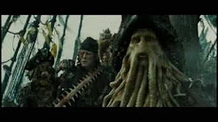
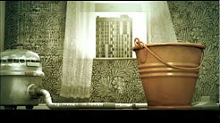
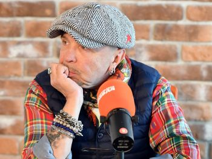
Гарик Сукачёв (настоящее имя — Игорь Иванович Сукачёв; род. 1 декабря 1959, Мякинино, Московская область, СССР) — советский и российский рок-музыкант, поэт, композитор, киноактёр, режиссёр театра и кино, сценарист, телеведущий. Лидер групп «Закат Солнца вручную» (1977—1983), «Постскриптум (P.S.)» (1982), «Бригада С» (1986—1994, с 2015) и «Неприкасаемые» (1994—2013). В 1992 году вёл на «Первом канале» авторскую телепередачу «Беседка».
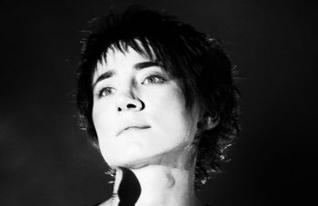
Земфира (полное имя Земфира Талгатовна Рамазанова (тат. Земфира Тәлгать кызы Рамазанова); род. 26 августа 1976, Уфа, Башкирская АССР, РСФСР, СССР) — российская рок-певица, музыкант, композитор, продюсер и автор песен. Земфира стала олицетворением нового движения в русском роке, которое журналисты окрестили «женский рок».
В начале 1998 года Земфира переезжает из родной Уфы в Москву, где начинает работу со своей группой «Zемфира» над первым студийным альбомом, выпущенным спустя год. С 1999 года Земфира выпустила шесть студийных альбомов, получивших значительное внимание прессы и публики. Также в её дискографию входят сборник би-сайдов и два концертных альбома. В её лирических исканиях нашли своё воплощение душевные страдания и поиски современной молодёжи. В 1999 году журнал «Огонёк» назвал Земфиру «прорвавшимся голосом поколения». На протяжении всей карьеры певицы многие из её песен попадали на первые строчки музыкальных чартов России, включая «Ариведерчи», «Искала», «Трафик», «Прогулка», «Мы разбиваемся» и «Без шансов».
Земфира также стала продюсером музыкального фильма Зелёный театр в Земфире (2008), получившего множество положительных отзывов от критиков. Вместе с режиссёром Ренатой Литвиновой Земфира стала сопродюсером картины Последняя сказка Риты (2012), к которой написала музыку. Фильм принял участие в конкурсной программе 3-го Одесского международного кинофестиваля и 34-го Московского международного кинофестиваля. Также написала музыку к фильмам Ренаты Литвиновой «Богиня: как я полюбила» и др. Несколько песен Земфиры из альбома «Спасибо» звучат в фильме Киры Муратовой «Мелодия для шарманки», а в картине «Вечное возвращение» в кадре неоднократно появляется концертная запись «Песенки герцога» из оперы «Риголетто» в исполнении певицы.
С момента появления в шоу-бизнесе в 1999 году Земфира претерпела многочисленные изменения во внешнем виде, манере поведения на сцене и общения с журналистами. Её поведение на публике нередко было эпатажным и вызывало неприятие прессы.
Земфира также отличается перфекционизмом в работе, жёсткими разногласиями с музыкальными продюсерами. Поэтому она часто продюсирует свои альбомы сама. Музыкальный стиль Земфиры относят к жанрам рока и поп-рока. В её музыке находят влияние как гитарного попа, так и гармоний джаза и босса-новы.
В 2004 году в российский учебник истории для 9 класса в раздел «Духовная жизнь» вошло упоминание о Земфире как о родоначальнике «совершенно иной» музыкальной молодёжной культуры (автор пособия — профессор Московского педагогического государственного университета Александр Данилов). Земфира оказала большое влияние на творчество молодых групп 2000-х годов и на подрастающее поколение в целом. В ноябре 2010 года её дебютный альбом был включён журналом «Афиша» в список «50 лучших русских альбомов всех времен. Выбор молодых музыкантов», где занял пятую строчку. Рейтинг составлялся по опросу среди представителей нескольких десятков молодых музыкальных групп России. В список также попал альбом «Прости меня моя любовь» (43 место).
В 2012, 2013 и 2014 годах певица вошла в рейтинг «Сто самых влиятельных женщин России», составленный радиостанцией «Эхо Москвы», информационными агентствами РИА Новости, «Интерфакс» и журналом «Огонёк».
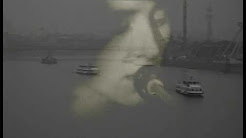
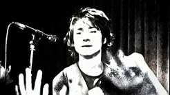
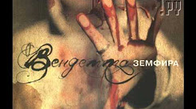
«Звери» — российская поп-рок-группа, созданная Романом Билыком в 2001 году. Лауреат премий «MTV Россия» и премии «Дебют». Группа также является рекордсменом по количеству выигранных «премий Муз-ТВ» (11 наград, 9 из которых в номинации «Лучшая рок-группа»).
• 2003 — Голод
• 2004 — Районы-кварталы
• 2006 — Когда мы вместе, никто не круче
• 2008 — Дальше
• 2011 — Музы
• 2013 — Лучшие
• 2014 — Один на один
• 2016 — Страха нет
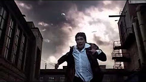